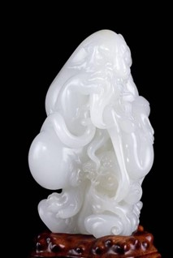
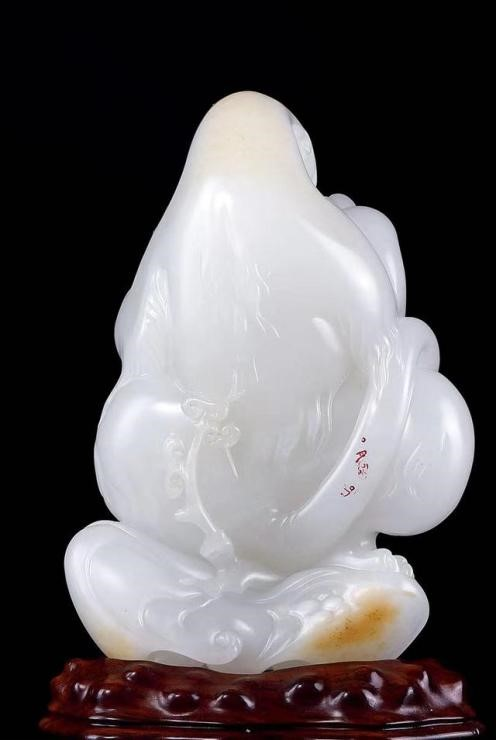

规格：11×4.7×6.7cm
重量：435.6g
款识：“日月昇子”
材质：新疆和田独籽
估价：RMB 2，000，000-2，800，000


先人屈原在《楚辞·九歌·山鬼》有云：“既含睇兮又宜笑，子慕予兮善窈窕。”意为“双目含情脉脉地嫣然一笑，你会喜欢上我美丽的样子”。一位多情的山鬼，在山中与心上人幽会以及再次等待心上人而心上人未来的情绪，瑰丽而又离奇，塑造了一位美丽、率真、痴情的少女形象。
作品取致密温润的新疆和田籽玉作原料，质地洁白，玉质细腻温润，无绺无裂通体温润，白度上佳，在如今好料紧缺的环境下，能有如此体量，实属难得。作者将富有浓郁浪漫主义色彩的《楚辞》中的山鬼形象，移植到自己的创作中。并通过浪漫大胆的想象，将幻想与现实交织在一起，再现了《楚辞》中描绘的情境。作品采用立体雕刻，赤豹与山鬼相伴，山鬼体形舒展，体态肥腴妖艳，婀娜多姿。赤豹虽体态强壮，但呈温顺之态，威猛中透露着一丝柔情，怀抱山鬼似有守护之意，以圆润柔和的线条展示立体生动的形象，人物雕刻比例和谐。一柔一刚，一温婉一霸悍，整体刚柔并济，包含着丰富的对比与统一的协调美感。不仅增添了山鬼神秘和野性的色彩，也形象刻画出了少女曼妙玲珑的身段姿态，画面层次分明，空间感十足。
该作品是是体现吴德昇个人风格的题材之一，体现了中国工艺美术大师吴德昇在人物造型方面精湛的玉雕技艺，通过深浮雕以及体态等线条的综合运用，秉承中华玉雕工艺精髓，并贯以西方雕塑理念，赋予传统题材不同的深刻内涵。因为具备了扎实的人物解剖学和绘画功底，才会在人物的表现上显得游刃有余，赋予作品以流动的韵律，飞扬的气韵，以及丰沛鲜活的生命张力。整器观之，此件作品秉持了吴德昇大师一贯的艺术风格和工艺精髓，无论是整体的情境还是细节的流畅都给予观者神驰心醉的视觉体验，作品工料双绝，是大师的完美之作，又蕴含丰富的文化内涵，极具收藏价值。